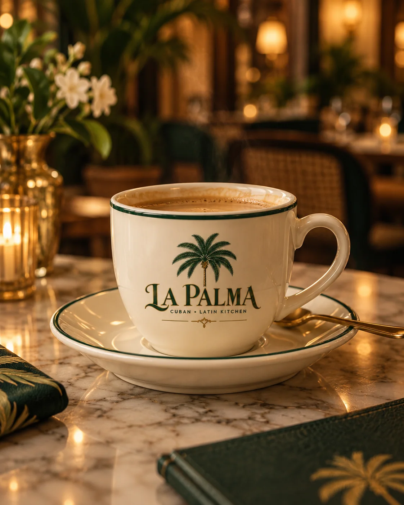
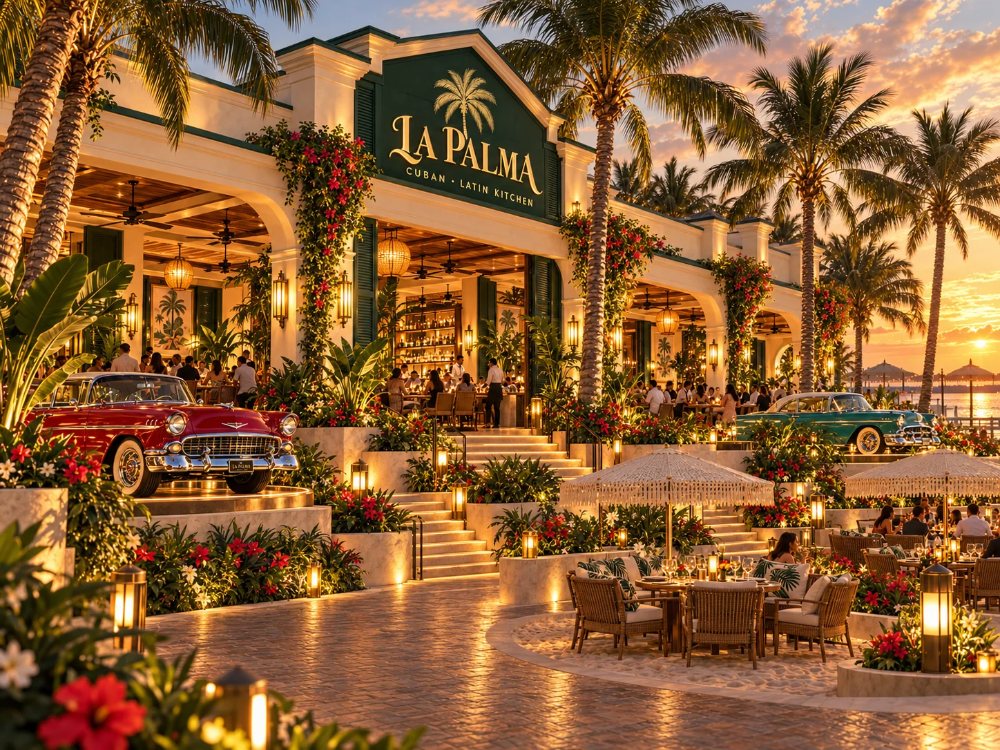
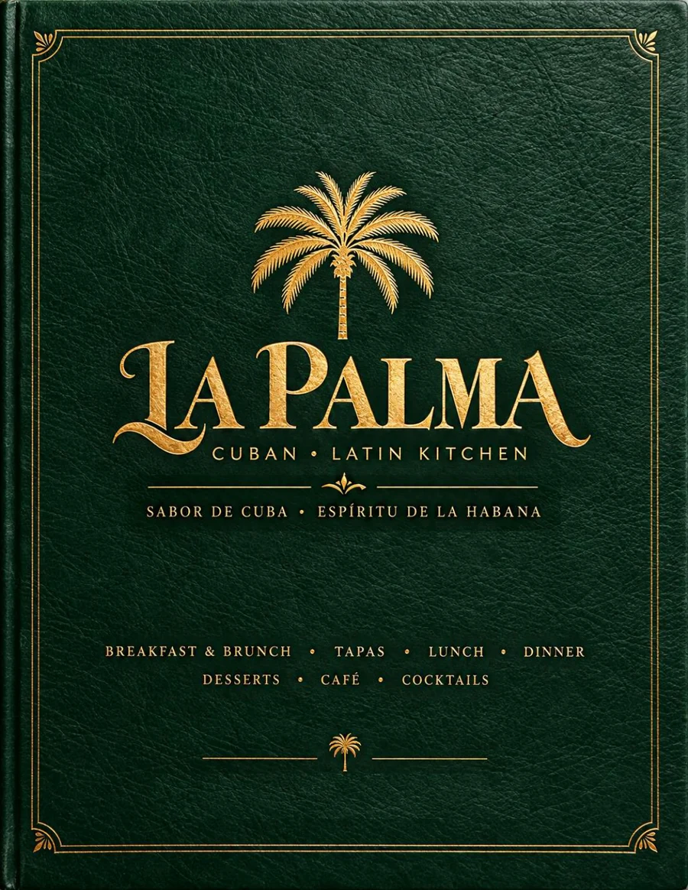
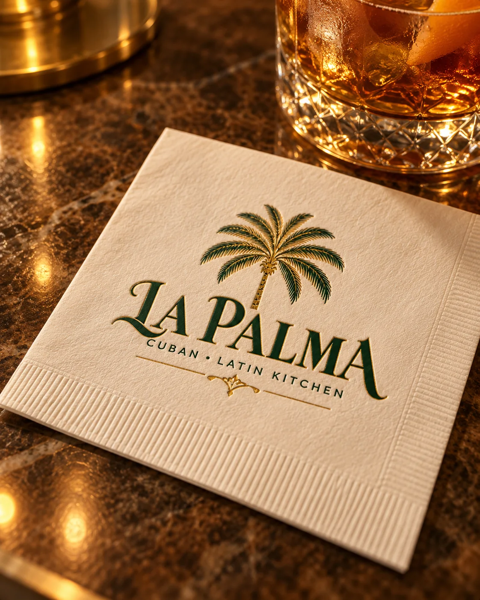

Morning ritual
Cafecito & brunch
Cuban coffee, guava, pastries and brunch plates set the pace on weekends.

123 Cuba Libre Street · Bahía de Oro, Florida
Waterfront Cuban and Latin cuisine, polished rum cocktails, live music and evenings that carry naturally from dinner into dancing.
Good food · Bright company
Lunch is easy by the water. Golden hour brings mojitos and rum classics to the bar. Dinner settles into Cuban favorites, seafood and long conversations — and on select nights, the music carries the room into salsa, bachata and late-night sets.
Inside, deep greens, warm brass, palms and candlelight frame the dining room. Along the water, terraces and boardwalk tables keep the sunset close.

Seven days · seven rhythms
Weekly favorites return throughout the season, from dominoes and live boleros to salsa nights, with special holiday editions along the way.

On the water
Palms, boardwalk tables and sunset views line the waterfront. Step inside for dinner and cocktails, or keep a table outside and let the evening move at its own pace.
Cocina cubana & Latin soul
Cuban classics, coastal seafood, social plates, cafecito and a rum-forward bar come together in a menu that works just as well for brunch as it does for a long dinner.

Cuban coffee, guava, pastries and brunch plates set the pace on weekends.

See the complete La Palma menu, from brunch through late-night cocktails.
Open the menu →
Mojitos, daiquiris, espresso cocktails and zero-proof refreshers anchor the bar.

After dark
Wednesday, Friday and Saturday carry on after dinner. Wednesday opens with a social lesson, while Friday and Saturday lean later with salsa, bachata and Latin sets into the night.
The room
The main dining room, bar and social floor share one richly layered interior, while outdoor terraces wrap the waterfront. Come for a quiet table, sit close to the music, or let dinner turn into a night out.

October · November · December

Dinner by the water. A drink at the bar. Maybe one more song.